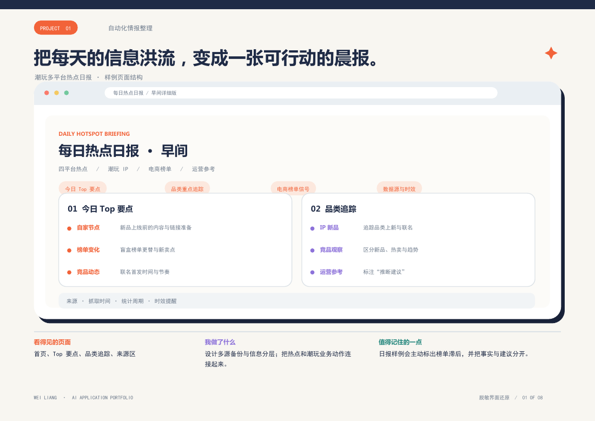
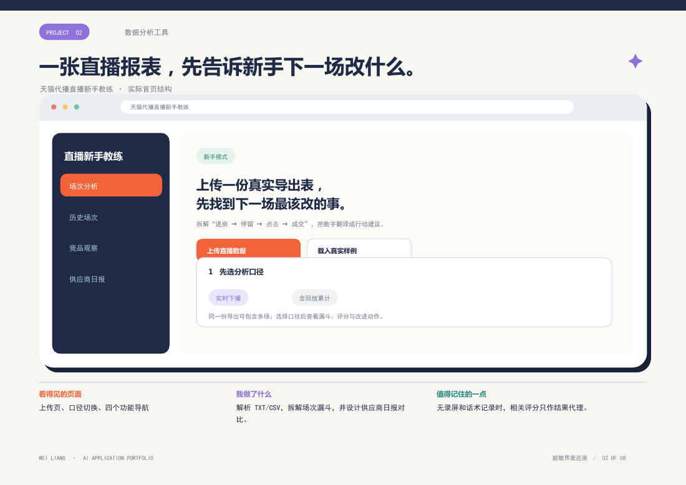
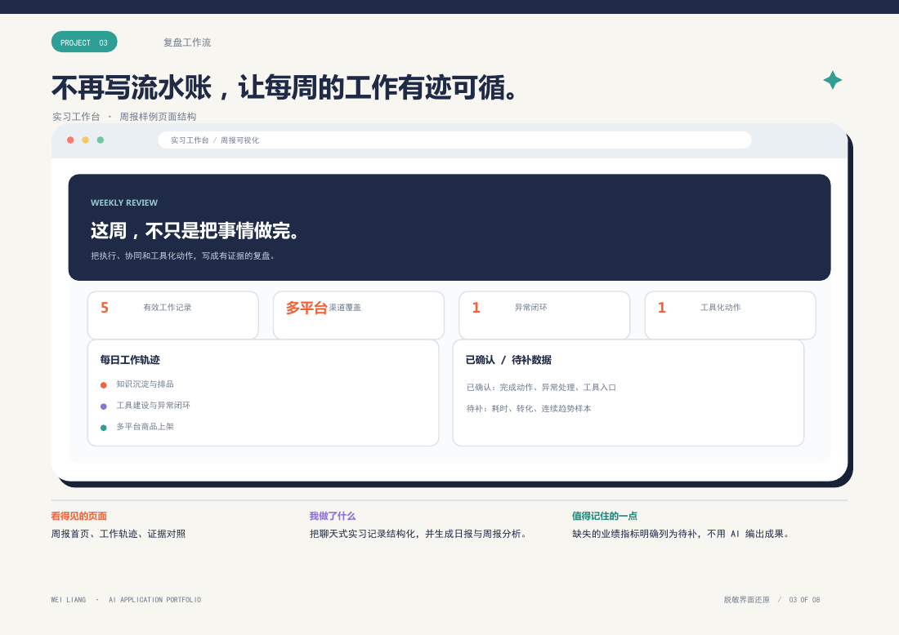
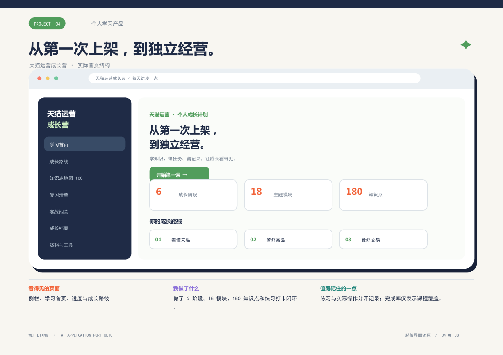
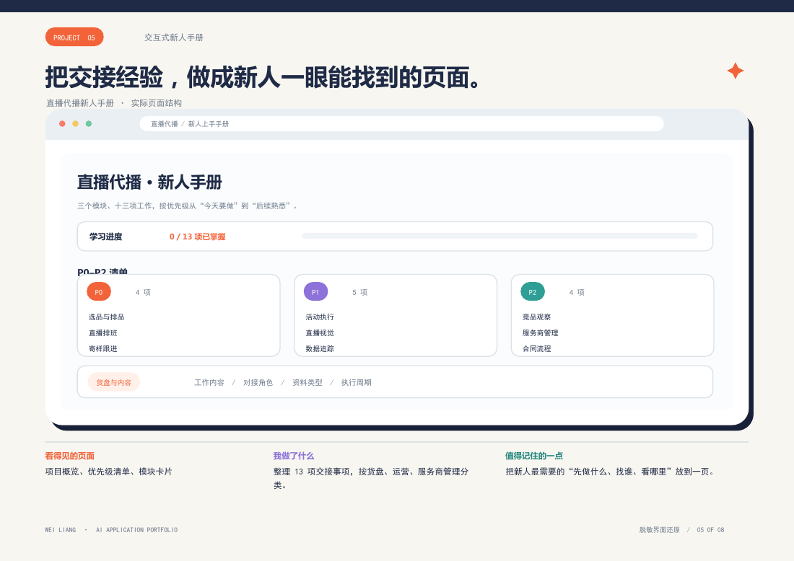
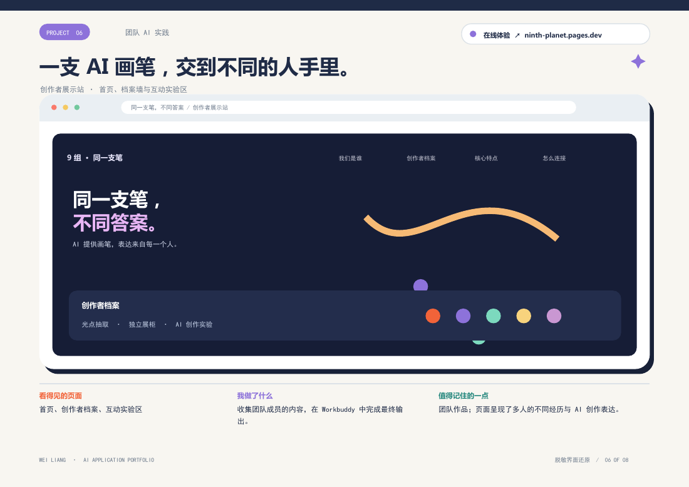
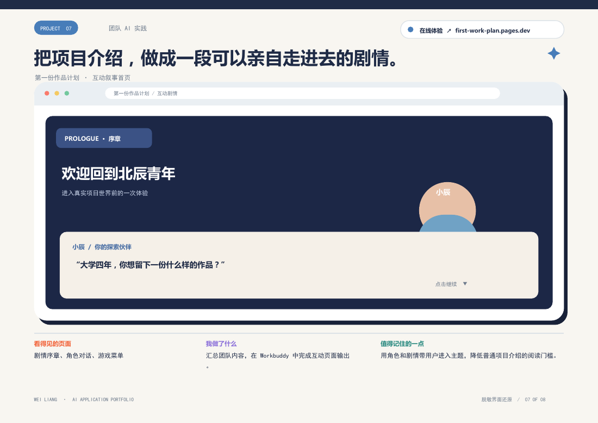
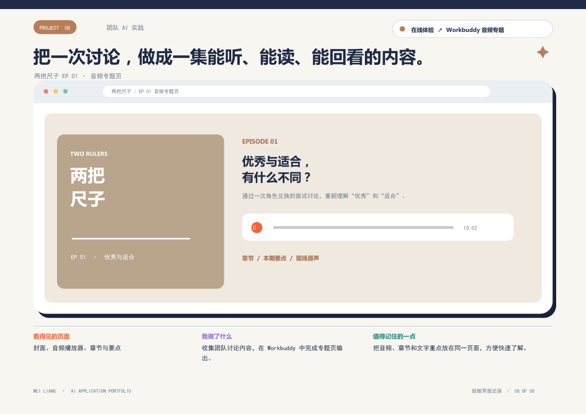

脱敏界面还原01 · AI 工作流个人项目
潮玩多平台热点日报
把四平台热点、潮玩 IP 与竞品动态整理成能给运营动作提供线索的晨报。
从每天的信息搜集，到直播数据复盘；从个人学习系统，到团队互动作品。这是我把想法推进成可浏览、可体验成果的 8 个项目。
ABOUT ME / 一点自我介绍
信息与计算科学背景，在电商运营实习中接触商品、活动、直播与数据。我喜欢先弄清业务里真正卡住人的地方，再把流程整理成能重复使用的页面和工具。
点开看页面，顺着业务问题往下看：我做了什么，最后交付了什么。

脱敏界面还原把四平台热点、潮玩 IP 与竞品动态整理成能给运营动作提供线索的晨报。

脱敏界面还原解析直播导出数据，拆开进房、停留、商品点击与成交，提示下一场优先改什么。

脱敏界面还原把零散的日常工作整理成结构化记录，再生成有证据边界的日报和周报。

脱敏界面还原6 阶段、18 模块、180 个知识点，把阅读、练习、自测、打卡与复习串成闭环。

脱敏界面还原将 13 项交接任务按模块和优先级组织，帮助新人知道先做什么、找谁、看哪里。

脱敏界面还原
脱敏界面还原
脱敏界面还原热点标来源和日期；统计口径不同的数据分开看。
把分析结论写成具体动作，而不是停在一串数字里。
让流程、验收标准与页面提示清楚到新人也能使用。
这里展示的是公开且脱敏的版本。更完整的业务过程，可以在面试交流。